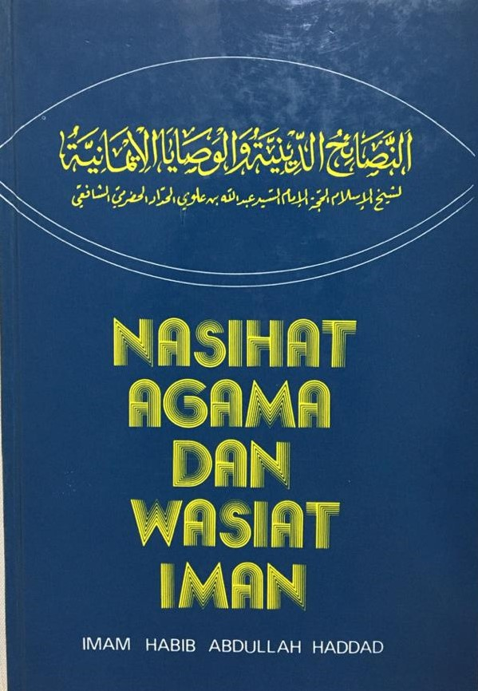

PRELOVED BOOKSTORE | 

Nasihat Agama dan Wasiat Iman
Preloved Price: RM 40.00
Category: Islamic Book
Summary: Sebuah buku bimbingan bagi setiap Muslim / Muslimah untuk mengenal ilmu-ilmu yang wajib dari aqidah Islamiah dan hukum-hukumnya, dan untuk melengkapkan diri dengan akhlak yang mulia dan budi pekerti yang terpuji, sebagaimana yang dituntun oleh Al-Quran Al-Karim dan Sirah Nabawiyah, di samping menunjukkan cara-cara berdakwah ke jalan Allah Ta’ala, menunaikan hak dan kewajiban terhadap Agama Islam yang suci, dengan berdalilkan ayat-ayat suci Al-Quran dan Hadis Nabi yang mulia, ditambah pula dengan kata-bicara para imam dan alim-ulama, yang tidak seharusnya seseorang Muslim sampai boleh menjahilinya, dan tidak sepi seseorang alim atau pendakwah atau guru atau murid dari memerlukannya Kandungan buku ini merupakan mutiara manikam yang tidak dapat dibeli dengan wang, malah diberi percuma oleh Allah Ta’ala sebagai suatu kurnia yang besar daripadaNya untuk sesiapa yang mengingininya, dan mereka itulah orang-orang yang mendapat petunjuk dan hidayat dari Allah Ta’ala yang akan hidup bahagia di dunia dan hidup bahagia di akhirat.
| Title | Nasihat Agama dan Wasiat Iman |
|---|---|
| ISBN | 9971770059 |
| Format: | Hardcover |
| Author: | Imam Habib Abdullah Haddad |
| Category: | Islamic Book |
| Publisher: | Pustaka Nasional |
*Reminder: Please copy&paste the title of the book to put into the order list and also please calculate the price of the book your own to pay it on checkout form.